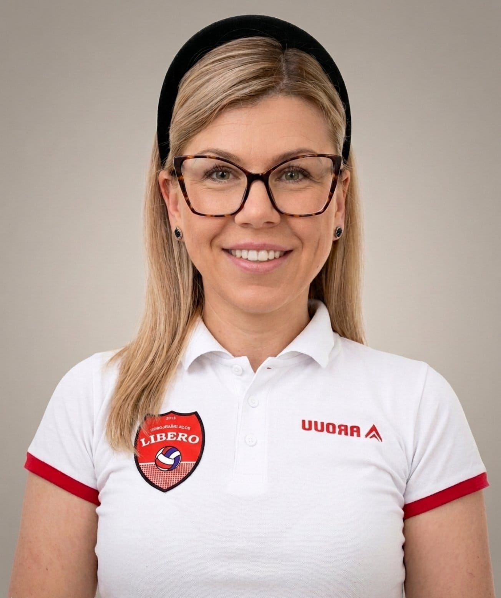
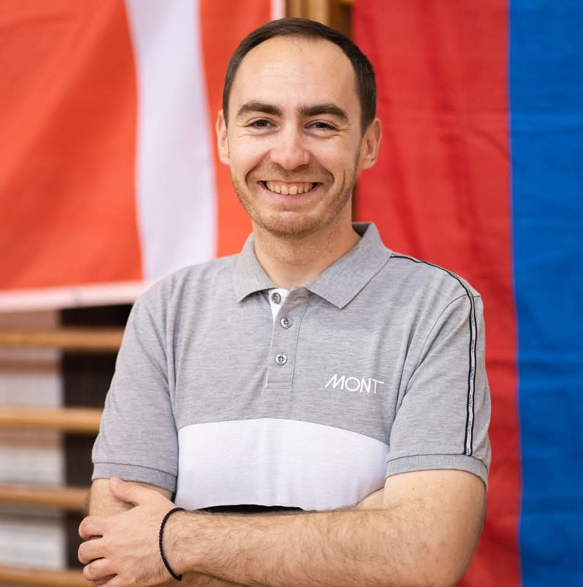
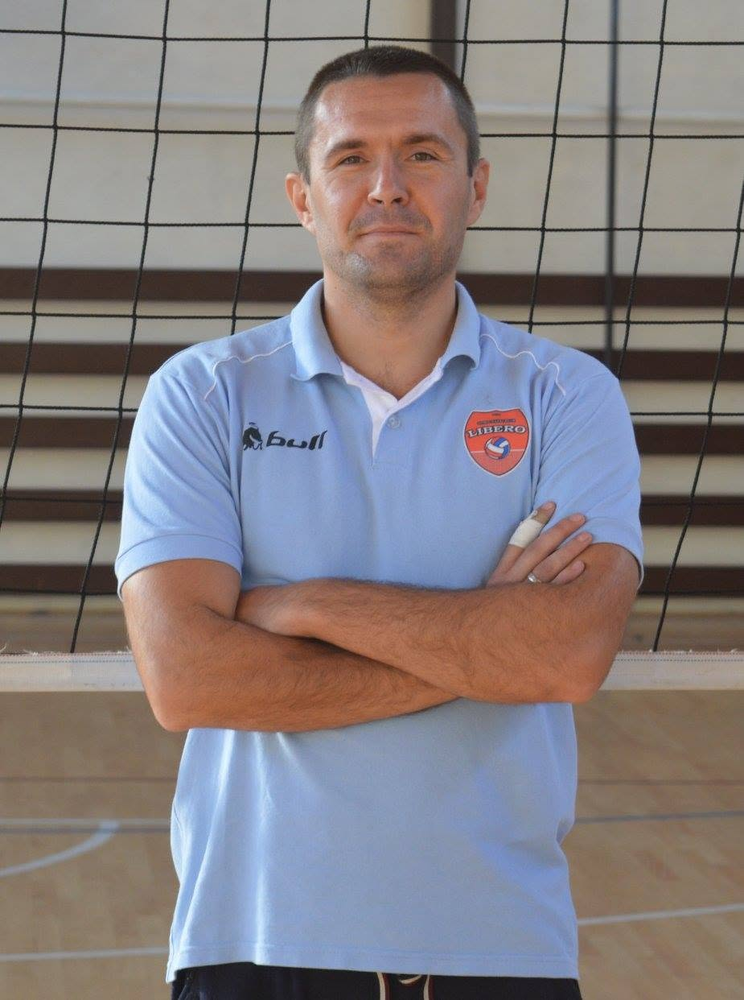
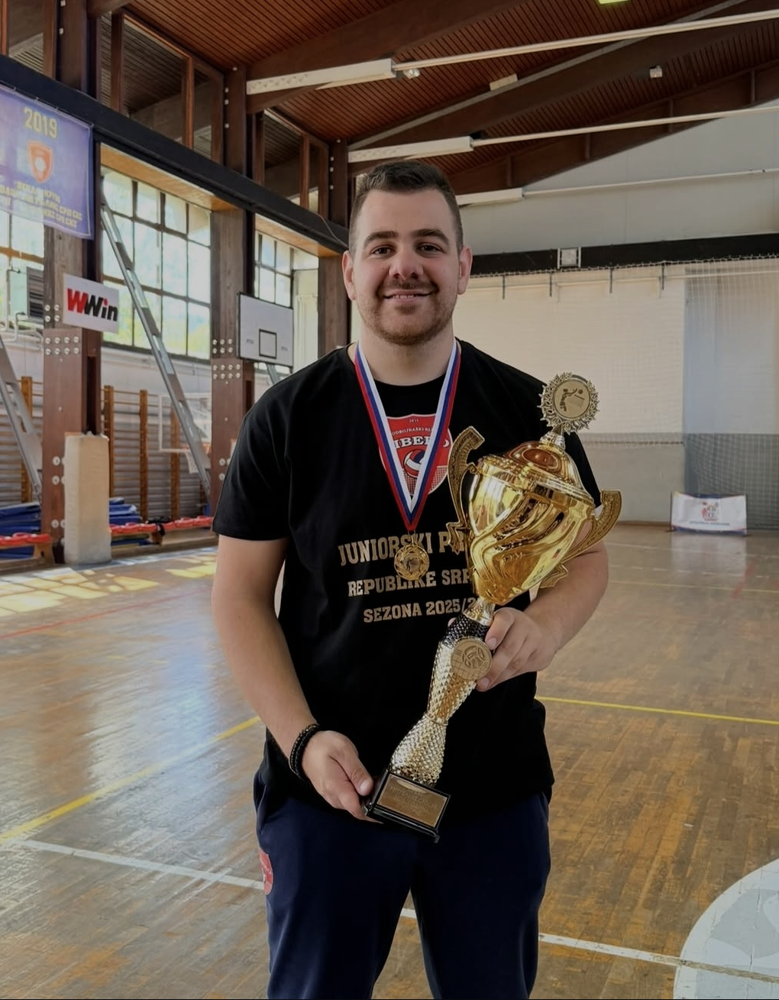
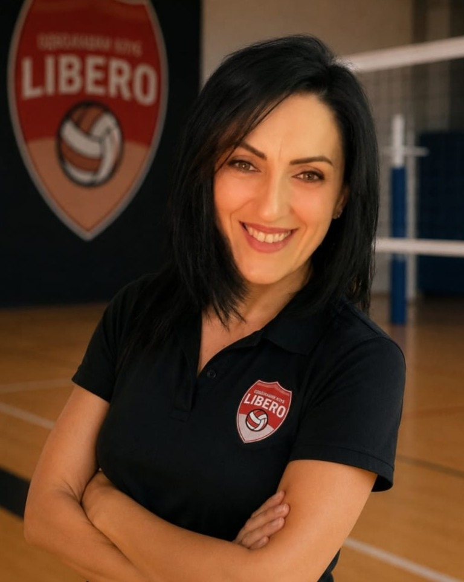
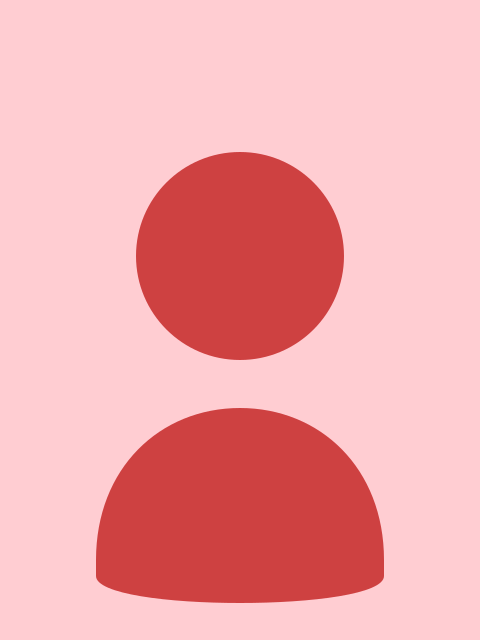

Iza svakog šampiona stoji posvećen trener. Naš stručni štab gradi ne samo odbojkaše, već i karaktere.

Diplomirani ekonomista i jedan od osnivača OK "Libero". Na funkciji predsjednika kluba od 2024. godine.

U klubu od samog osnivanja 2015. godine. Sada ima ulogu predsjednika skupštine kao i trenera mlađih selekcija.

Jedan od osnivača OK "Libero" i glavni trener seniorske i pionirske ekipe. Karijeru je počeo kao igrač, gdje je nakon uspješne igračke karijere odlučio da se posveti trenerskom poslu, a 2015. sa bratom Jovanom pokreće priču zvanu OK "Libero".

U klub dolazi 2015. godine kao već iskusan igrač, a 3 godine kasnije preuzima veliku odgovornost i postaje trener. Već duži niz godina, uz trenera Bojana, predvodi seniorsku i pionirsku ekipu kao i mlađe selekcije. Trenutno radi sa mlađim selekcijama u OŠ "Dvorovi" i OŠ "Jovan Dučić".

Nakon igračke karijere u klub dolazi 2022. godine i od tada vodi najmlađe članove našeg kluba, konkretno mlađu i stariju grupu škole odbojke u OŠ "Knez Ivo od Semberije".

Prije trenerske karijere koju započinje 2025. u OK "Libero", imao je bogatu igračku karijeru u raznim klubovima među kojima su OK "Radnik" iz Bijeljine kao i OK "Futog" koji igra Ligu Srbije. Trenutno predvodi kadetske i pretpionirske selekcije u OŠ "Knez Ivo od Semberije".
Član seniorskog tima od sezone 2024/2025 a sa trenerskim radom počela je u septembru 2025 gdje trenira mlađe selekcije u školi odbojke u OŠ "Jovan Dučić".
Veliki dio igračke karijere provodi u lokalnim klubovima OK "Radnik", u kojem počinje karijeru, a kasnije i OK "Libero", nakon čega prelazi u OK "Maglić" iz Foče u kojem ostaje 4 sezone. Ove sezone se u klub vraća na poziciji trenera, gdje uz trenera Bojana predvodi seniorsku i pionirsku selekciju u OŠ "Knez Ivo od Semberije".